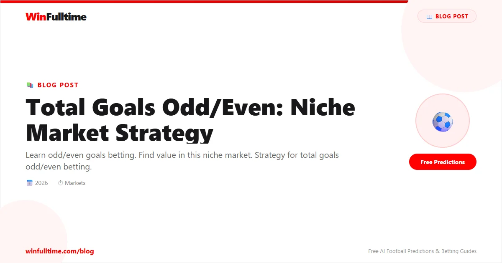

The odd/even goals market is one of football betting's most misunderstood opportunities. On the surface, it appears to be a pure 50/50 coin flip — total goals must be either odd or even. But the statistical distribution is not perfectly balanced, bookmaker pricing creates consistent biases, and league-specific factors shift the probability in predictable ways.
This guide goes deep into the odd/even market: the mathematics behind the distribution, how 0-0 is treated by different bookmakers, the correlation with total goals lines, league-specific rates, in-play opportunities, and a bankroll strategy designed for near-50/50 markets.
The odd/even goals market asks a single question: will the total number of goals scored in regulation time be an odd or even number? A 1-1 draw (2 goals) is even. A 2-1 win (3 goals) is odd. A 0-0 draw is zero, which is even.
| Scoreline | Total Goals | Odd/Even | Bet Result |
|---|---|---|---|
| 0-0 | 0 | Even | Even wins (some bookmakers void) |
| 1-0 | 1 | Odd | Odd wins |
| 1-1 | 2 | Even | Even wins |
| 2-1 | 3 | Odd | Odd wins |
| 2-2 | 4 | Even | Even wins |
| 3-2 | 5 | Odd | Odd wins |
The odds for odd and even are typically close to even money (1.85-2.10), reflecting the perception that this is a 50/50 market. However, statistical analysis reveals systematic biases that the disciplined bettor can exploit.
The odd/even market typically offers better value at Asian-facing bookmakers like Pinnacle and 22Bet than at traditional European bookmakers. Pinnacle's lower margins mean closer-to-fair odds on both sides. Use OddsPortal to compare odd/even prices across bookmakers before placing any bet.
If matches were completely random, odd and even would occur exactly 50% of the time. But football is not random — goal distributions follow patterns that create a measurable bias.
The empirical finding: Across Europe's top leagues, even total goals occur slightly more frequently than odd totals. The split is approximately 51-52% even vs 48-49% odd over large samples.
| Total Goals | Parity | % of Matches (Avg) | Cumulative % |
|---|---|---|---|
| 0 | Even | 8-10% | 8-10% |
| 1 | Odd | 15-18% | 23-28% |
| 2 | Even | 20-23% | 43-51% |
| 3 | Odd | 16-19% | 59-70% |
| 4 | Even | 10-13% | 69-83% |
| 5 | Odd | 5-7% | 74-90% |
| 6+ | Varies | 3-5% | 100% |
The key insight is that 2-goal matches (even) are the single most common outcome at 20-23% of all matches. Combined with 0-0 (8-10% even) and 4-goal matches (10-13% even), the even side has a natural advantage. Odd totals rely primarily on 1-goal (15-18%) and 3-goal matches (16-19%), which together are less frequent than the sum of the most common even results.
The treatment of 0-0 draws varies critically between bookmakers. This is the single most important rule to understand before betting odd/even.
| Bookmaker | 0-0 Treatment | Impact on Betting Strategy |
|---|---|---|
| Pinnacle | 0-0 = Even (settled as loss for Odd) | Standard — 0 counts as even |
| Bet365 | 0-0 = Even (settled as loss for Odd) | Standard — 0 counts as even |
| 22Bet | 0-0 = Even (settled as loss for Odd) | Standard — 0 counts as even |
| Betfair | 0-0 = Even (settled as loss for Odd) | Standard — 0 counts as even |
| William Hill | 0-0 = Push — stake returned on both Odd and Even | Non-standard — reduces Even advantage |
| Unibet | 0-0 = Even (settled as loss for Odd) | Standard — 0 counts as even |
The odd/even market is intimately connected to the total goals market. Understanding this correlation is essential for identifying mispriced odds.
Key correlation principles:
| Match Total Goals (Line) | Expected Goals Range | Odd % | Even % | Best Bet |
|---|---|---|---|---|
| Under 2.5 (low-scoring) | 0-2 goals | 38-42% | 58-62% | Even — strong bias |
| Around 2.5 (average) | 2-3 goals | 48-52% | 48-52% | Neutral — shop for best odds |
| Over 2.5 (high-scoring) | 3+ goals | 54-58% | 42-46% | Odd — moderate bias |
| Over 3.5 (very high-scoring) | 4+ goals | 56-60% | 40-44% | Odd — stronger bias |
If the total goals line is set at 2.5 and you believe the match is likely to go under, then even is the correct side as a correlated bet. If you believe the match will go over 2.5, odd becomes the favoured side.
This correlation means you should never bet odd/even in isolation — always consider the implied total goals first. If the market has Under 2.5 priced at 1.60 (strong favourite) but Odd/Even is priced evenly at 1.95 each, there is a clear mispricing: even should be shorter than odd when Under 2.5 is strongly favoured.
Beyond statistical averages, specific match contexts shift the odd/even probability in predictable ways.
Odd/even distribution varies by league based on average goals per game and the frequency of specific scorelines.
| League | Avg Goals/Game | Even % | Odd % | Odd/Even Bias |
|---|---|---|---|---|
| Serie A | 2.6 | 53% | 47% | Even favoured — defensive league |
| Primeira Liga | 2.4 | 54% | 46% | Even favoured — low scoring |
| La Liga | 2.5 | 53% | 47% | Even favoured — tactical |
| Ligue 1 | 2.6 | 52% | 48% | Slightly even favoured |
| Premier League | 2.8 | 51% | 49% | Near 50/50 |
| MLS | 2.9 | 50% | 50% | True 50/50 |
| Championship | 2.7 | 52% | 48% | Slightly even favoured |
| Bundesliga | 3.1 | 49% | 51% | Slightly odd favoured |
| Eredivisie | 3.2 | 48% | 52% | Odd favoured — high scoring |
| Austrian Bundesliga | 2.8 | 51% | 49% | Near 50/50 |
| Swiss Super League | 2.9 | 50% | 50% | Near 50/50 |
| Scottish Premiership | 2.8 | 51% | 49% | Slightly even favoured |
The most profitable approach is to focus on leagues with strong biases: Serie A and Primeira Liga (even favoured) and the Eredivisie (odd favoured). Bookmakers often price odd/even close to 1.93/1.93 regardless of league, failing to account for these structural differences. Betting even in Serie A and odd in the Eredivisie yields a consistent 2-4% edge before considering match-specific factors.
Just as with total goals, individual teams have distinctive odd/even profiles based on their playing style and goal distribution.
Team profiles and odd/even tendencies:
| Team Profile | Example | Avg Goals in Matches | Even % | Odd % |
|---|---|---|---|---|
| Elite attack, vulnerable defence | Leverkusen 2023-24 | 3.5 | 44% | 56% |
| Possession-dominant, solid defence | Man City | 3.0 | 50% | 50% |
| Defensive, counter-attacking | Atletico Madrid | 2.2 | 56% | 44% |
| Open, transitional | Brighton | 3.1 | 47% | 53% |
| Low-scoring, physical | Burnley | 2.3 | 55% | 45% |
Use FBref to pull match-by-match results and calculate each team's odd/even split over the last 20-30 matches. A team that has gone even in 14 of its last 20 matches is showing a structural tendency that the bookmaker may not have priced into the odd/even market. Soccerway provides historical results going back multiple seasons for deeper analysis.
In-play odd/even betting is one of the most profitable applications of this market because the odds swing dramatically based on the current scoreline.
How odd/even odds change during a match:
| Scoreline | Goals So Far | Odd Odds | Even Odds |
|---|---|---|---|
| 0-0 | 0 (even) | 1.80-2.00 | 1.80-2.00 |
| 1-0 | 1 (odd) | 2.20-2.60 | 1.50-1.70 |
| 0-1 | 1 (odd) | 2.20-2.60 | 1.50-1.70 |
| 1-1 | 2 (even) | 1.70-1.90 | 1.90-2.10 |
| 2-0 | 2 (even) | 1.70-1.90 | 1.90-2.10 |
| 2-1 | 3 (odd) | 2.00-2.40 | 1.60-1.80 |
| 2-2 | 4 (even) | 1.60-1.80 | 2.00-2.40 |
When the current scoreline is odd (1-0, 2-1, 3-2), most bettors instinctively back even because they expect one more goal to make it even. But the reverse strategy — backing odd when the score is odd — often provides better value because the odds on odd are inflated (2.20-2.60) while the true probability of one more goal arriving is only 50-55% in most matches.
Example: Match is 1-0 at half-time. Even odds are 1.55, odd odds are 2.50. The true probability of the match ending odd (no more goals or 2+ more goals in an odd combination) is approximately 40-45% in an average match. At 2.50 (40% implied), odd offers fair to positive value.
If the match is 1-1 or 2-0 (even total) and both teams are creating chances, odd odds will be around 1.80-1.90. The true probability of one more goal (making it odd) is 55-65% in an open match. This creates a small but consistent edge on odd.
Odd/even can be combined with other markets for enhanced odds, but correlation must be carefully considered.
| Combination | Description | Typical Odds | Strategy Notes |
|---|---|---|---|
| Even + Under 2.5 | Even total goals AND under 2.5 | 2.00-3.00 | Strong correlation — very common combo |
| Odd + Over 2.5 | Odd total goals AND over 2.5 | 2.00-3.00 | Strong correlation — very common combo |
| Even + BTTS Yes | Even total AND both teams score | 3.00-5.00 | Weak correlation — 1-1 is the link |
| Odd + Correct Score 1-0 | Odd total AND 1-0 exact score | 6.00-10.00 | Low correlation — odd covers many scores |
| Even + 0-0 | Even total AND goalless draw | 10.00-15.00 | Perfect correlation but low probability |
Odd/even is a useful component in same-game parlays because it has low correlation with most other markets. Combining odd/even with match result, for example, covers both dimensions of the match — who wins and what the goal tally looks like. The true combined probability is close to the product of the individual probabilities, meaning the parlay price is fair.
However, avoid combining odd/even with total goals markets in the same match. Odd + Over 2.5 and Even + Under 2.5 are both highly correlated, and bookmakers typically price these combos with a significant margin baked in.
Odd/even betting is a near-50/50 market, which requires a different bankroll approach than value betting in inefficient markets.
Key principles for 50/50 market bankroll management:
Bankroll: $1,000
Edge: Even in Serie A match. True probability 54%. Bookmaker odds 1.93 (implied 51.8%). Edge = 2.2%.
Kelly recommended stake: ($1,000 x 0.022) / (1.93 - 1) = $23.66
Level stake (1%): $10.00
Verdict: A half-Kelly ($11.83) or level staking at 1% ($10.00) is safer. At $10 per bet with 54% win rate at 1.93 odds, expected ROI is 4.2% per bet. Over 1,000 bets, expected profit is $420.
The single biggest mistake. Bettors assume all bookmakers treat 0-0 the same way. Some void/push on 0-0, others count it as even. This changes the true probability by 8-10 percentage points.
Odd/even is not 50/50. The distribution is 51-52% even, 48-49% odd across most leagues. Bettors who treat it as a coin flip ignore the structural biases.
Betting odd in Serie A and even in the Eredivisie without checking league-specific distributions is a losing strategy.
The Martingale system is particularly dangerous in 50/50 markets. A losing streak of 5-7 bets can wipe out your bankroll.
Not every match offers value. Most matches have odds close to 1.93/1.93. Value exists when league bias, team tendencies, and match context align.
Even totals occur slightly more frequently — approximately 51-52% of matches across Europe's top leagues. High-scoring leagues like the Bundesliga and Eredivisie can be 50-50 or slightly odd-favoured.
0-0 is an even total (zero is even). At most bookmakers, 0-0 is settled as an even result. However, some bookmakers void/push all odd/even bets on 0-0, returning the stake. Always check the rule before betting.
Serie A (53% even) and Primeira Liga (54% even) are best for even backers. The Eredivisie (52% odd) is best for odd backers.
Yes, with discipline. The edge is small (2-4%) but consistent. A 55% win rate at average odds of 1.93 produces a 6% ROI. This is a steady long-term opportunity, not a get-rich-quick market.
At least 200 times your stake size. At 1% stakes, a $1,000 bankroll supports $10 bets. The variance in 50/50 markets means you need significant reserves.
Yes. The key strategy is backing odd when the score is odd (inflated odds of 2.20-2.60). Most bettors assume one more goal will arrive. The true probability of no more goals is often 35-45%.
Odd/even works well in same-game parlays with match result or BTTS because correlation is low. Avoid combining with total goals markets (Over/Under 2.5) — the correlation is too high.
Start with the league average, then adjust for the match's total goals expectation. An expected total of 2.2 goals favours even (55-60%). An expected total of 3.2 goals favours odd (52-56%).
Pinnacle offers the sharpest odds with the lowest margins (typically 1.93/1.93). 22Bet and BetVictor occasionally offer enhanced odds above 2.00. Compare all options on OddsPortal.
Odd/even betting rewards league specialisation, disciplined bankroll management, and an understanding of goal distribution biases. Focus on one or two leagues, track every bet, and be patient.
Daily football predictions with odd/even probability data:
Generate optimized accumulator combinations from today's AI-powered predictions. Set your target odds and get instant ticket suggestions.
Free Ticket Builder →